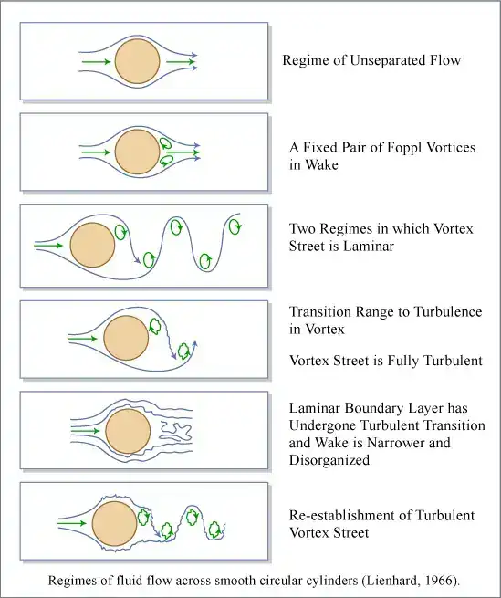
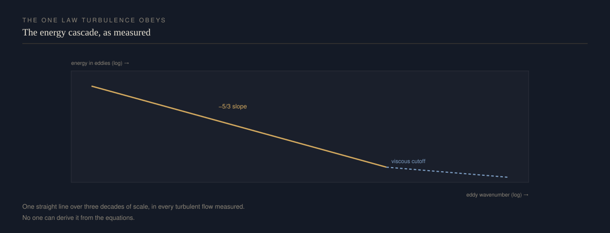

The problem
The Navier–Stokes equations describe how fluids move. They are known, they are used constantly, and they are not solved in general. Turbulence — the chaotic, multi-scale eddying of fast flow — is where the difficulty lives: energy cascades from large eddies to small ones, and the range of scales grows with the Reynolds number.
Maps, diagrams and images


The Clay Institute's Millennium Problem is narrower and sharper than 'explain turbulence'. It asks whether, in three dimensions, smooth solutions always exist for all time, or whether they can blow up. Nobody knows.
What is actually used
Engineering does not wait for the proof. Aircraft design uses Reynolds-averaged models and large-eddy simulation; weather models use parametrisations; pipe flow uses empirical correlations that have been refined for a century.
The gap between practice and theory is the point: the models work in the regimes they were tuned for and fail outside them. That is why a new aircraft or a new reactor still needs wind tunnels and test campaigns.
Existence and smoothness is the mathematical question — open, and worth a million dollars.
A predictive theory of turbulent statistics is the physical question — also open, and arguably harder, because it may not have the kind of clean answer mathematicians want.
Kolmogorov's scaling (1941) is the closest thing to a law: in the inertial range, energy spectrum follows a −5/3 power law. It is observed widely, and it is not a derivation from first principles for all flows.
Why it belongs with the open problems
Because it is the best example of a problem where 'we know the equation' and 'we understand the phenomenon' are very different statements, and where the gap has practical consequences — in climate models, in fusion confinement, in aircraft design.
The open problems index carries the mathematical statement; this page carries the physical one.
Why the −5/3 law is still a puzzle
Kolmogorov's 1941 argument is dimensional, not deductive: energy enters at large scales, cascades through eddies without loss, and dissipates at the viscous scale, so the spectrum in between must depend only on the dissipation rate and the wavenumber. That gives −5/3 and it works, which is why it is taught as if it were derived.
The gap is intermittency. Real flows have bursts and filaments, so the cascade is not space-filling, and the measured exponent drifts slightly with Reynolds number in exactly the way the refined similarity hypotheses predict. Closing the gap from the Navier–Stokes equations is one of the Clay Millennium Problems, and the prize is still unclaimed.

Sources for this page
- Clay Mathematics Institute, Navier–Stokes existence and smoothnesswww.claymath.org
- Wikipedia, “Turbulence” — phenomenology and modellingen.wikipedia.org
- Kolmogorov (1941), the local structure of turbulencewww.jstor.org
- NASA, turbulence modelling in computational fluid dynamicswww.nasa.gov
Open resources on this topic
- BookTurbulence and Child Well-Being. New Federalism: National Survey of America's Families, Series B, No. B-16. As — ['Moore, Kristin Anderson', 'Vandivere, Sharon', 'Ehrle, Jen · 2000 (Internet Archive, free to read)
- BookCenter for Turbulence Research, 1987 Activities — ['United States. National Aeronautics and Space Administrati · 1988 (Internet Archive, free to read)
- BookAn intercomparison of plasma turbulence at three comets: Grigg-Skjellerup, Giacobini-Zinner, and Halley — ['Tsurutani, Bruce T.', 'Glassmeier, K.-H.', 'Neubauer, F. M · 1995 (Internet Archive, free to read)
- PapersOpen-access articles: DOAJ · PubMed Central · Internet Archive Scholar
- BooksPublic-domain and borrowable copies: Open Library · Project Gutenberg · Google Books
More images
Cite this page
Momin, S. (2026). Turbulence. The Larger World Archive. https://drsamonline.github.io/LARGE_GLOBE/turbulence.htmlMomin, Sohil. “Turbulence.” The Larger World Archive, 2026, https://drsamonline.github.io/LARGE_GLOBE/turbulence.html.Momin, Sohil. “Turbulence.” The Larger World Archive, 2026. https://drsamonline.github.io/LARGE_GLOBE/turbulence.html.@misc{turbulence2026turbulence,
author = {Momin, Sohil},
title = {Turbulence},
year = {2026},
howpublished = {The Larger World Archive},
url = {https://drsamonline.github.io/LARGE_GLOBE/turbulence.html},
note = {Last reviewed 20 November 2026}
}Last reviewed 20 November 2026 · Corrections policy · this page is not peer reviewed